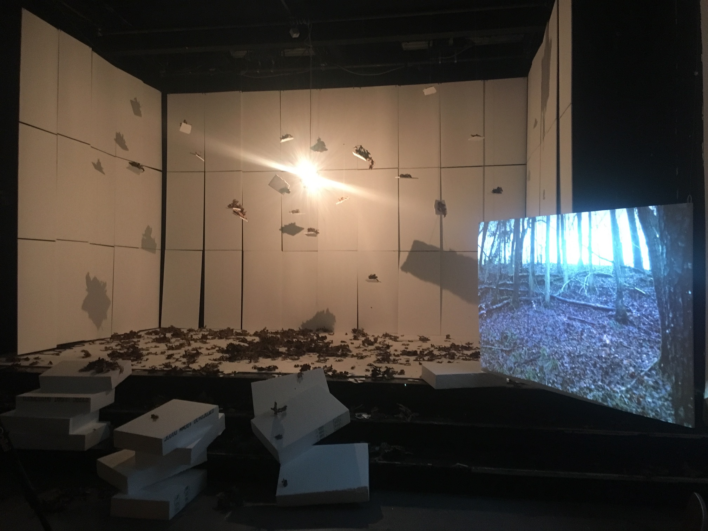
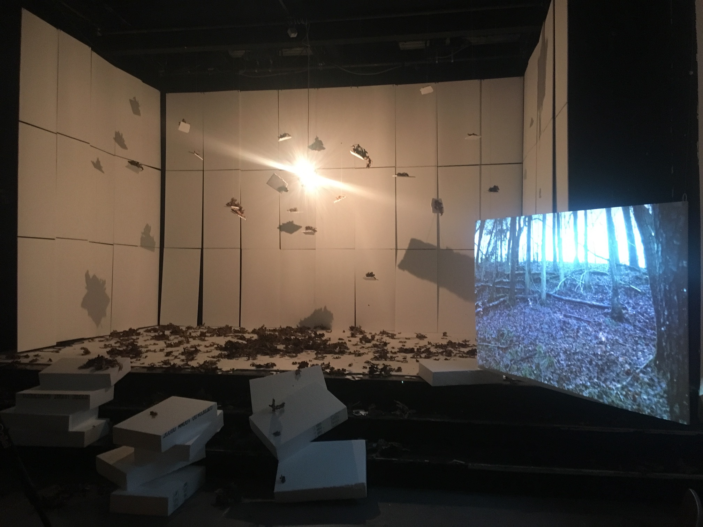
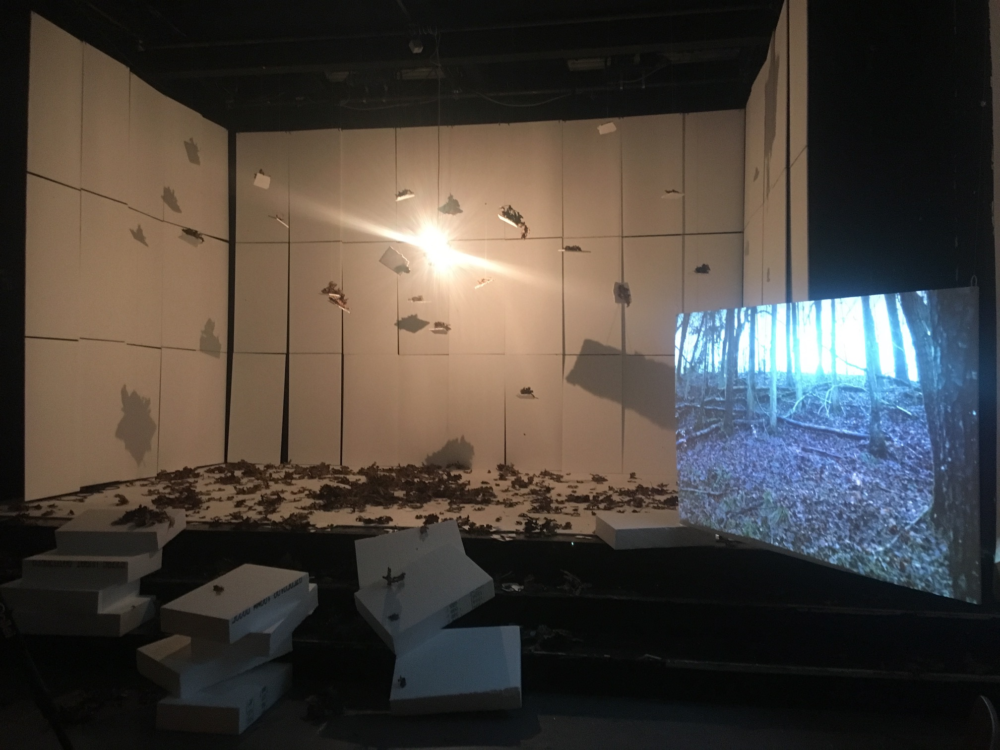

Malachite copper ore, copper wire, one channel sound, 8 minutes
METAL II METAL looks at the life cycle of copper from the perspective of sound. Since humans have begun to stockpile music, sonic journeys—from a source to a cochlea—have increasingly involved signals passing through electrical circuits. Furthermore, every digital act (a stream, a search, a click) involves a physical counterpart written in metallic circuitry and air-conditioned server farming. Digital or not, ‘immaterial’ processes of listening rely on the mining, extraction, refinement and distribution of minerals such as copper from the earth’s crust. In the 21st century, listening is geological. The music in METAL II METAL consists of deconstructed artifacts of metal—the musical genre—which was, since its birth in Birmingham, UK, a reflection of the industrial processes that had irreversibly left their mark on the cultural and environmental landscape.
&because my mother was crazy 14.06.24 - 23.06.24 FRISE, Hamburg
Maximaler Genuss
Site-specific performance and installation, stereo sound, assortment of cheese, assortment of beer, refrigerator, cups
Reflecting the history of Dortmund’s Museum Ostwall building, which used to be the Dortmunder Union beer brewery, this performance-installation combines a beer tasting experience with music from Wagner’s Parsifal. While enjoying the epic views over the city afforded by the museum, two performers invite the audience to consume different pairings of beer and cheese at a precise climax point in Wagner’s music. This multisensory ritual is said to be able to elevate all who take part into a higher plane of consciousness. A queering of holy communion, which gives the knights of the Grail everlasting life in Parsifal, the act serves to humorously but critically examine themes of pretentiousness, privilege, masculinity, and musical transcendence.
Part of Annika Kahrs, A Sinfonie And Its Parts, in Nam June Paik: I Expose The Music 15.07.23 - 23.07.23 Museum Ostwall, Dortmund
Hearing Pinkish-Orange, Soft, Malleable and Ductile
16-channel sound, light, 25 minutes
Linking together stories of resource extraction, millenia-old magma in the earth’s core, loudspeaker manufacture, and emotional desire, Hearing Pinkish Orange, Soft, Malleable And Ductile reflects on the material entanglements of listening in the 21st century. Using sound as a medium for musical and textual narrative, it both embodies and calls into question the supposedly immaterial flows of energy—from speaker membranes to ear drums—that so ubiquitously define contemporary modes of aurality. The title is derived from a description of copper, the primary metal in electrical cables and circuits.
Photos by Fred Dott
If a Tree Falls in a Forest and No One Is Around, Does It Even Make a Sound? curated by Tobias Peper 21.01.23 - 12.02.23 Kunstverein Harburger Bahnhof
corror, tiou, squa, pipiqui tells the story of Frederick the Great's attempted extermination of sparrows through sonic warfare in 1744. It reconstructs the subsequent attempts by composers to attract the sparrows back after Frederick's edict brought about ecological disaster. Staged in a hanging bird feeder, it complicates interactions between music history and ecology, probing how things might have turned out differently if we had learnt from Frederick's mistakes, and replaced the man-over-nature stance of the enlightenment with a philosophy that embraced ecological symbiosis with non-human beings. The title is taken from a birdsong-inspired poem by J. M. Bechstein.
Liebe und Frühling in Bergedorf interweaves two love stories through music: the poem Wie sich Rebenranken schwingen, published in 1833 by August Heinrich Hoffmann von Fallersleben, and the personal testimony of Beata Ehlers, who migrated from Poland to the outskirts of Hamburg in the 1980s, where she met her husband Marco. Taking a setting of von Fallersleben’s poem by Johannes Brahms and interspersing Ehlers’s account, the city of Hamburg (where Brahms was living when he set the poem to music) is conceptualised as a point of connection between people and time periods. The piece was interpreted by soprano Freja Sandkamm and me, both of us drawing on our own stories of migration to the north German city.
Photos by Helge Mundt
Part of how to live in the echo of other places, an exhibition by Annika Kahrs curated by Ellen Blumenstein in co-operation with IMAGINE THE CITY 01.06.22 - 04.09.22 Schuppen 29, Baakenhöft, Hamburg
Debussy's Secret Devotions
Article; pencil and inkjet print on paper, 29.7 x 21cm
A piece of speculative musicology reimagining Claude Debussy's music as holding secrets which make it too dangerous for contemporary audiences. Delving into some of the composer's unreleased correspondences, it reveals his association with a shadowy sect called the Sequanae – a fringe spiritual terrorist group who sought to reset western civilization through natural disaster, and who worshipped the goddess of the river Seine, Sequana. Urgently-needed corrections of his music are suggested through detailed annotations of the 1905 manuscript of Reflets Dans L’Eau for piano.
Edition of 10 sold to support the victims of earthquakes in Turkey and Syria.
Performance for pianist, sampler, video 15 minutes
Reflects Dans Sequana reimagines Claude Debussy's motivations for composing, construing his piano music as too politically and culturally subversive for twenty-first century audiences. Looking at a selection of water-inspired piano pieces through a warped lens, it proposes solutions for how this music should be reinterpreted and corrected. In so doing, it seeks to playfully dismantle the assumptions of the wider western art music tradition, questioning its claims to transcendence, universality, and cultural relevance, while simultaneously celebrating it.
Written for Kathryn Williams's Coming Up For Air project, which commissions pieces lasting one single breath. Kathryn's project was inspired from her recovering from chronic respiratory conditions. Seeking a personal connection with the idea of breath, I went back to my teenage years, during which I played the tuba fairly seriously. During this time, I was frequently told that my sound wasn't big enough, and that I needed to develop my lung capacity.
Performances: Frequency Series, Constellation, Chicago (2020), Deep Minimalism, Southbank Centre, London (2019)
Sitzfleisch
Performance for three musicians, narrator, styrofoam props, objects, video, 2-channel sound
30 minutes
'Sitzfleisch' was a term invented in the nineteenth century to refer to the act of sitting still during a concert, the better to appreciate music in a purely aesthetic way. Although now culturally entrenched, this practice was at that time relatively new, following contemporary theories that art could express pure beauty or transcendental truth. Using borrowed and original musical material, unconventional playing techniques, and text, this piece rethinks early Romantic theory and the acts of sitting, listening, and musicking in a concert. All along, the idea that the audience is undergoing a transcendental moment is reinforced to the point of absurdity.
PostX, Merelbecke, 2019. Photos by Down The Rabbit Hole.

First version, Fleet Street Theatre, Hamburg, 2019. Photos by Nina Kuttler.
Livestream version for Walter TV, Brussels, 2021.
Written in collaboration with Down The Rabbit Hole at residencies in Snape Maltings (UK), Fleet Street Theatre (DE), and PostX (BE) withs funds from Rudolf Augstein Stiftung, Hamburger Kulturstiftung, Fleet Street Theatre, and Ulysses Network.
Performances: Walter, Brussels (2021), My Privacy Is Your Privacy, Belgium (2019), Fleet Street Theatre, Hamburg (2019)
Laughter Studies 7
Performance for three vocalists, ensemble, surtitles, stereo sound
18 minutes
Laughter Studies 7 uses listening, verbal description, music and text to explore the sonic environment of concert halls. It evokes sounds from everyday life; sounds an audience makes as it quietens down before the arrival of performers on stage; sounds of a dystopian function band noodling its way through aimless musical material; sounds of musicians shuffling off a stage; sounds created live in the room by the tense community of concert-goers.
Photos by Kristof Lemp
Written for Nadar Ensemble as part of the Nadar Summer School for composers and sound artists 2017. Revised for the Darmstädter Internationale Ferienkurse für Neue Musik 2018.
Performances: Gaudeamus Muziekweek (2019), Darmstadt International Ferienkurse für Neue Musik (2018), Nadar Summer School, Antwerp (2017)
Laughter Studies 6
Performance for four vocalists, ensemble
15 minutes
Laughter Studies 6 features treadmills, repeated melodies, vocal imitations, musical imitations of those imitations, shouted banalities, and a duet between a dancer and an improvised MIDI drum solo.
Commissioned by An Assembly in 2017. Revised for London Contemporary Music Festival 2019.
Performances: London Contemporary Music Festival (2019), City University, London (2018), Centrala, Birmingham (2018), Legroom, Manchester (2017)
Reviews: "like a revival of some long-forgotten children's game", Ivan Hewett, The Telegraph (2019) (read), "sparky", Fiona Maddocks, The Guardian (2019) (read)
Laughter Studies 5
Performance for trio
? minutes
Laughter Studies 5 lives in a void between almost-completion and permanent revision.
Performance for solo vocalist, jazz trio, mixed ensemble
14 minutes
Laughter Studies 4 involves imitations and descriptions of everyday sounds, disjointed jazz grooves, and music of the so-called great repertoire: Bruckner, Wagner, Mahler. This sets up expectations of musical greatness that may or may not be fulfilled.
Performances: Filthy Lucre, London (2017), I'Klectik, London (2016)
Laughter Studies 3
Performance for three vocalists
10 minutes
Laughter Studies 3 explores emotion-laden, human-produced sounds that usually occur spontaneously or involuntarily. It lives in the border between what these sounds mean on a psychological level and what their sonic surface is.
Performances: Lucerne Festival (2022), Plus Minus, Reid School of Music, Edinburgh (2019), Line Upon Line, SXSW Austin (2019), Maulwerker, Labor Sonor, Berlin (2016)
Laughter Studies 2
Performance for two vocalists
9 minutes
In Laughter Studies 2, two performers describe and imitate recordings taken from a range of sources: holidays in France, dérives around London, internet sound libraries, record collections, and people crying and laughing.
Performances: Current Resonance, Denmark (2022), Ensemble Container, Basel (2021), Nick Photinos, Julia Wolfe, Bang On A Can Summer Festival (2019), Julia Masli, Julie Nesher, London Experimental Variety Show (2019), Stephanie Lamprea, Naomi Woo, Spectrum, New York (2018), Rosie Middleton, Ben Zucker, Banff Centre for the Arts (2018)
In Laughter Studies 1, two performers describe and imitate an assembled collage of sounds communicated via headphones. The focus of the piece (and each piece in the series) is on each individual performer's spontaneous reactions to the sounds.
Performances & broadcasts: Parkinson Saunders, Borealis Listening Club (2019), scapegoat, No Hay Banda, Montreal (2017), soundinitiative, Espace des Arts Sans Frontières, Paris (2017), Juliet Fraser, Jennifer Walshe, Cafe Oto (2016), BBC Radio 3 Hear And Now (2016)
Autoglossia refers to the idea of ‘self-language’ or ‘speaking to/through oneself’. It was made with software by Rodrigo Constanzo called C-C-Combine. When I sang into the software, it tried to match my live voice to a stored bank of samples, and then triggered them. In this case, these were other recordings of my voice taken on my phone over many years. The end result is a jumble of sounds and syllables that sometimes sound like their own weird language, which I accompanied using MIDI instruments and stuff I had to hand, like a stylophone.
Broadcasts: BBC Radio 3 Hear And Now (2018)
Empathy Reducer
Performance for pianist, stereo sound
17 minutes
Empathy Reducer is a piece about playing the piano. Different facets of piano playing – everything from traditional repertoire, to the physical action of keys being pressed, to plain old virtuosity, to good old wood’n’string resonances – are taken as basic objects. Rather than being presented directly, they are skirted around, hinted at, and put through various filters. Some of these include a human voice – the piano’s great-great-great-great-great grandparent? – and a MIDI controller – an enhanced, Philip K. Dick-like replicant of a piano, an AI computer to the piano’s humble homo sapiens. Stretched in the middle of all these things – octopus-like, spread-eagled – is that curved, tensed, gridded institution of an instrument.
Performances: St John's, Smith Square, London (2018), Unerhörte Musik, BKA Theatre Berlin (2017)
Vox Pop
Performance for four performers
13 minutes
Vox Pop involves a score made of samples from Wagner's operas. Four performers interpret the samples through descriptions, imitations, and gestures. The original music is filtered through their minds and bodies, leaving a series of disjuncted translations of the original.
Bastard Assignments. Photos by Dimitri Djuric
NAMES, Mosaikfest Salzburg. Photos by Mark-Daniel Prohaska
Performances: NAMES, Teatri del Suono Trieste, Mosaikfest Salzburg (2022), Late Music Ensemble, York (2017), Post Paradise, Birmingham (2016), Bastard Assignments, Block 336, London (2016)
for_____ on_____
Performance for any number of musicians, stereo sound
8 minutes
for_____ on_____ explores the idea of learning and rehearsing as performance. A group of performers hear a field recording for the first time. A voice explains that they should use it as a score, and have a limited time to learn it on their instruments. The audience are with them as they negotiate this task. (With each performance of the piece, the title is filled in with the names of the performers and date of performance.)
Performances: Michael Baldwin, Peyee Chen, Rodrigo Constanzo, Huddersfield (2015), Tim Cape, Edward Henderson, Bastard Assignments, London (2015), David Pocknee, Ruben Zilberstein, Weisslich 2, Hundred Years Gallery, London (2015)
neither serious/or, I take the liberty/of not writing to you/regarding my serious 'Variations'
Performance for string quartet
8 minutes
neither serious/or, I take the liberty/of not writing to you/regarding my serious 'Variations' explores the idea of sight-reading and rehearsal as performance. Four members of a string quartet open a set of envelopes containing scores they have not seen before. The music inside is inspired by one of the opening bars of Beethoven's String Quartet Op. 18, No. 2 in G major.
This article proposes ways of reimagining how performers and audiences relate to one another during live performances. In contrast to forms of participation where audiences emulate well-known performer and/or composer models, we argue for sensitivity to audiences as they present themselves. Attending to, reciprocating and adopting audience behaviour in/as performance can lead to novel interactions, identities and formats for creative practice. We discuss pieces by Pauline Oliveros, David Helbich and Carolyn Chen, as well as our own practice research. Read it here.
Published in Tempo (Cambridge University Press), Issue 300, April 2022.
Conference paper versions of this article presented at: 13th Conference on Interdisciplinary Musicology, University of Edinburgh & University of Hong Kong (2022), Rethinking Participatory Processes, Huddersfield University (2022)
Scores In Time
PhD Thesis
This thesis is about using sound as musical notation. It features many of the pieces on this website, and discusses a range of themes: rehearsing vs performing, verbal notation, sound perception, listening to listening, phenomenology, and the use of headpieces in Mexican television of the 1950s. Read it here.
Article by Tim Rutherford-Johnson for issue 403 of the Wire, published in September 2017.
I am a sound artist, composer and researcher. I was born in 1988 in Suresnes, France, lived in the UK for a while, and am now based in Hamburg.
Spanning live performance, installation and writing, my work speculatively (re)imagines pasts, presents and futures of human and non-human music-making. It is characterised by stream-of-consciousness descriptions of recorded sound; pseudo-intellectual ramblings underpinned by hobbling instrumental pulses; speakers talking to floors; transcendental climaxes squeezed through MIDI timbres; paranoid associations between musical details and religious hegemonies; decadent rituals pairing Wagnerian harmony with fine cheese. It has been exhibited in institutions such as Kunstverein Harburger Bahnhof, IMAGINE THE CITY and Museum Ostwall Dortmund, performed in everything from small DIY scenes to state-funded international festivals (Lucerne, Darmstadt, Gaudeamus, Bang On A Can), broadcast on national radio stations (BBC Radio 3, SWR 2), and published in Pfeil, Posthumanist and TEMPO magazines.
My collaborations have included music for sound and video installations at the 16th Lyon Biennale of Contemporary Art, Schering Stiftung and SAVVY Contemporary, amongst many others.
My research interests include materialities of sound, speculative music history, participatory art, and music's sociality, in particular the culturally-embedded and -enacted roles of composer, performer and audience.
louis [dot] dheudieres [at] live [dot] co [dot] uk


 
